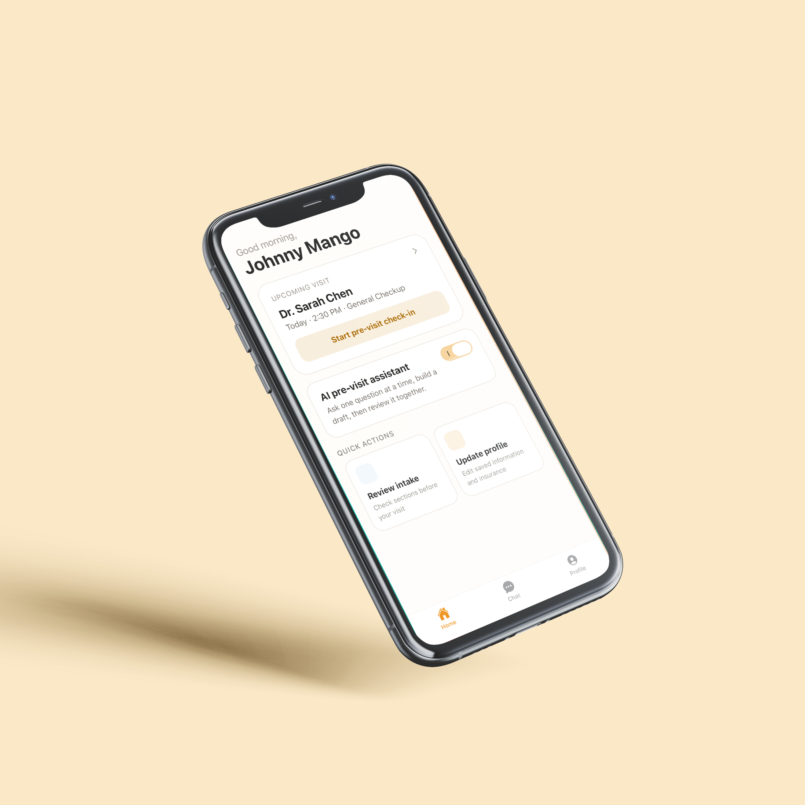
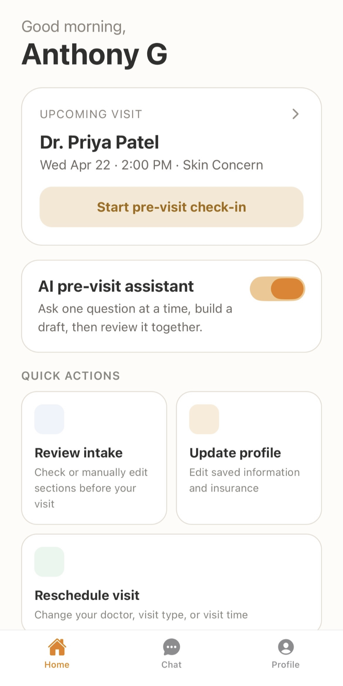
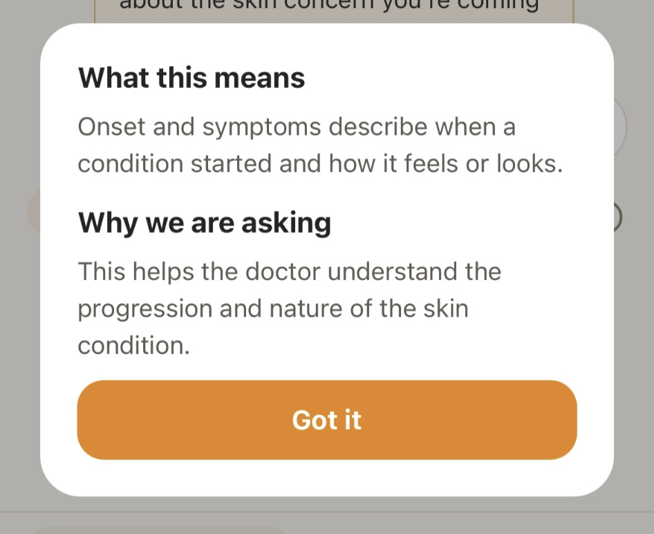
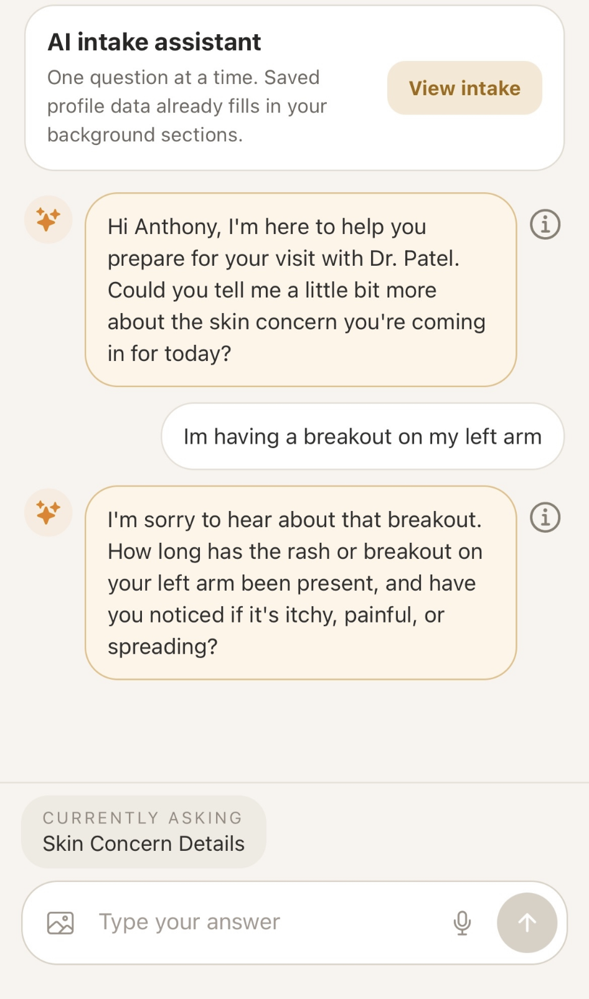
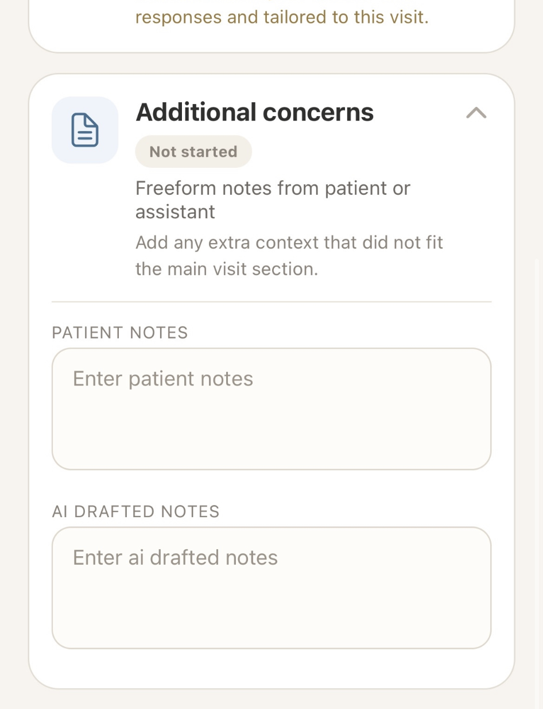

A Hybrid Context-Aware Medical Check-in System - Human Computer Interaction Project
Role: Product Researcher & Designer
Feb - May 2026

Medifera is a hybrid context-aware intake experience. Patients can describe their issue to an AI chatbot agent, which then leads them to a personalized intake form. This design aims to reduce confusion and guesswork, decrease the time it takes to complete forms, while offering a better overall UX.
Medical check-in systems currently tend to require patients to complete lengthy forms with repetitive or irrelevant questions, and many of these questions are presented without sufficient explanation of what they are asking or how they will be used. These forms cause patients confusion, frustration, or misinterpretation. As a result, this leads to inaccurate or rushed responses or questions being skipped altogether. The problem can be broken down into the following pain points:
To better understand the current state of the situation and how medical check-in forms have been addressed, we researched past attempts to solve this problem.
One study compared single-page, multi-page, and conversational digital forms through usability tests with 20 subjects trying each type of form (Iftikhar et al., 2021). The study reported that “the single-page form outperformed the other two digital forms in almost all usability metrics”. It showed that structure significantly affects usability, task completion time, user satisfaction, and error rates. However, due to the focus on usability, the results of this study did not measure the accuracy of the intake form or address personalization.
Another attempt compared online forms to virtual conversational agents, in which 391 participants completed a health assessment using a chatbot and an online form (Soni et al., 2022). The results reported that “most participants (69.9%) preferred the chatbot over the online form”. This shows that conversational interfaces boost engagement and preference, though they are less efficient, and the study focused mostly on user experience.
Finally, one study evaluated emotionally adaptive virtual health assistants, in which participants interacted with AI avatars that respond to users’ emotions (Ashrafi et al., 2025). It found that “Happy/sad avatars increased engagement and trust”. However, the research only had 21 participants, and there is a “need for further research into the impact of emotion-adaptive virtual assistants on user engagement, well-being, and adherence to health recommendations.”
Based on these approaches and additional research, we’ve found that:
We deployed a 16-question survey, which can be found in [Appendix link], to evaluate overall user satisfaction, identify pain points, and discover areas for improvement in current medical forms.
1. Have Information/Context About the Question Being Asked:
Based on surveys, participants have reported having some experiences being confused by medical check-in
questions.
2. Add a Personalization Factor:
Users reported that it felt confusing why they needed to provide certain details that don’t relate to
their visit (“Why am I here for a sore throat and you’re asking me how long I’ve been obese”)
3. Protect User Privacy and Ensure Comfort:
Many users responses mentioned issues and discomfort with questions feeling invasive. Our design
should allow users to share necessary personal information comfortably [6]
4. The Form Should Ideally Be a One Pager:
Most users reported that the length of the form always or somewhat impacts how carefully they answer
questions, as well as form abandonment.
5. Auto-Fill Returning Patient Info:
The system should pre-populate known fields (ex. insurance) using data from prior visits or linked
records,
requiring patients to only review and confirm rather than re-enter already known information.
6. Open-Ended Field for Additional Patient Context:
The form should include an optional free-text field at the end where patients can share any
information not captured by structured questions, including urgency, context, or concerns [5]
Based on our requirements, we designed two possible solutions:
This solution would maintain the familiarity of a traditional intake form structure, but with improved grouped sections, explanations that define confusing terms or explain why a question is being asked, the ability for a patient to explain why they skipped a question, and an autofill feature for returning users.
This solution gathers necessary information and context from the user through a chatbot agent. That information shapes a personalized form along with autofilled fields and explanations that define confusing terms or explain why a question is being asked.
We decided to go with the second design because our survey results support it.
Based on our requirements and user study findings, we decided to make our application a hybrid context-aware intake form. The process of the app looks like the following:
We based our process on the requirements we gathered.

To meet requirement 1, we ensured that questions use simple language to make more sense. Each question also has further information in case the user wants to know why it is being asked or wants more context for clarity.

For requirement 2, we designed the app with a chatbot to add a conversational element to our product. This creates a more personal intake experience and makes questions more relevant to the visit. It also supports requirement 3, as it ensures that no invasive questions are asked, only the ones that are needed.

Since our application reuses medical history, insurance, and user information once it’s filled out, users don’t have to spend unnecessary time re-entering it. Information from the chatbot conversation also autofills the intake form, making the process much faster and more enjoyable. This fulfills requirements 4 and 5, as autofill shortens the form. Lastly, there’s room to add additional information for doctors in case other questions didn’t cover it, fulfilling requirement 6.

We concluded that this design worked best because it shortens the intake form, making the process much faster, lessens work and cognitive load, and ensures all the questions asked are relevant and easy to understand. We built our application using React Native and the Expo framework, with a backend using Supabase and PostgreSQL.
We recruited 6 adults who have completed medical forms in the past, and had each of them fill out a consent form and receive a briefing of the study. Participants were informed that they may stop at any time and completed the study using fictional medical scenarios rather than real personal health data.
The goal of this evaluation was to test the effectiveness of a chatbot-assisted medical check-in system compared to traditional form-based check-in, evaluating clarity, task success, trust, comfort, and overall satisfaction through observation, a six-point task survey, and semi-structured interviews.
Participants began by filling out a traditional paper medical check-in form, and then used our app, MediFera, while completing specific tasks for each. As participants went through them, the evaluator took notes on metrics such as time on task, errors, guesses, and any notable quotes.
After the observation, participants filled out a survey using a 5-point Likert scale, with open-ended follow-ups. It covered their satisfaction with the product, comfort using the AI, and their thoughts on specific features of the app.
Finally, the study concluded with a semi-structured interview. We asked participants to compare their experience with the app to the traditional form in terms of confusion and comfort with the AI, and to go into depth on what they particularly liked or disliked.
Evaluation involved 6 adult participants who had prior experience with medical check-in forms. Each completed both a traditional paper intake form and the MediFera app under observation, followed by a survey and interview.
Observations showed a big change in performance. Traditional forms took participants an average of 18 minutes, with an average of 5 errors and 3 instances of guessing or Googling answers. Notably, none of the participants completed the entire traditional form, and they expressed frustration with irrelevant or invasive questions. In contrast, MediFera averaged 7 minutes to complete (with AI-autofilled forms taking as little as 31 seconds to review), 2 errors, and fewer than 1 guess. Multiple participants completed the core workflow with zero errors.
| Metric | Traditional Form | MediFera |
|---|---|---|
| Average Time on Task | 18 minutes | 7 minutes |
| Average Errors | 5 | 2 |
| Average Guesses | 3 | < 1 |
Survey results (n=6) showed high scores across most dimensions:
Across our defined goals (Efficiency & Relevance, Task Success, Transparency & Understanding, and Overall Satisfaction), all met their targets. Trust was the only area flagged for improvement, as the AI trust score of 3.75/5 did not reach the 4.0 threshold. Comfort with sharing medical information through the chatbot rated higher at 4.0/5, and fewer than half of participants expressed active hesitation during interviews.
The 7-minute average completion did not meet our 4-minute efficiency goal. However, the gap is largely attributable to the conversational AI onboarding phase rather than the form itself. AI-autofilled forms took as little as 31 seconds to review, suggesting the original time goal may have underestimated the full scope of the intended task.
This project was a great opportunity to learn about the design process and how to create a product that
is
user-friendly and effective. I learned how to conduct user research, analyze data, and create a
full-stack application based on user needs.
Even beyond the project itself, the Human Computer Interaction course taught me how to think about
design in a more user-centered way, and how to create products that are not only functional but also
enjoyable to use. It was great being able to take what I learned in class and apply it to a real-world
project.
From identifying a problem, delving deep into research on that problem, it was amazing to seehow simply
better understanding an unfamiliar area carried over into the design process so effectively. Despite the
fact that I have filled out medical forms myself, being able to better understand other peoples'
experience with this product and process was essential to developing a good solution. For example, if it
werent for our survey and user-interviews, we may have overlooked the common user request for an
autofill feature, or improved trust in the AI.
Overall, this
project was a valuable learning experience that helped me develop my skills as a designer and
researcher.
Team Stickers: Julia Arukakkal, Naomi Dao, Anthony Guzman, Emily Kim, Zayna Sayyed